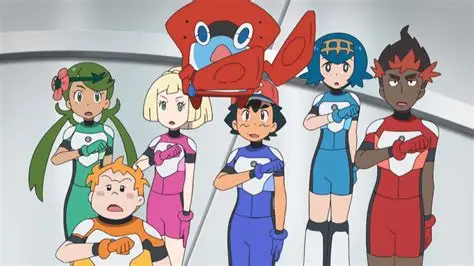
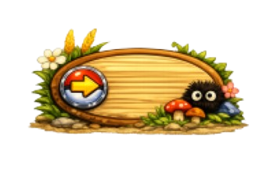
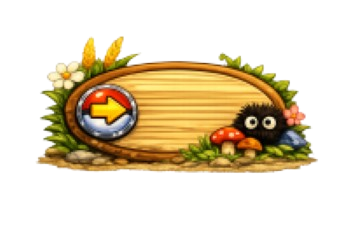

Studio Ghibli
Túmulo dos Vagalumes

O Túmulo dos Vagalumes (Grave of the Fireflies) conta a história comovente e trágica de Seita e Setsuko,
dois irmãos que lutam para sobreviver no Japão devastado pelos bombardeios da Segunda Guerra Mundial, após
perderem a mãe e serem abandonados por parentes, enfrentando a fome, a miséria e a cruel realidade da guerra
enquanto tentam preservar sua dignidade e um ao outro em um abrigo abandonado, simbolizando a inocência
destruída e o custo humano do conflito, segundo.
Playlist no Spotify
Em busca da Agharta

Viagem para Agartha" (título original: Hoshi o Ou Kodomo), lançado em 2011, é um filme de animação japonês
de fantasia e aventura dirigido por Makoto Shinkai (conhecido por Your Name e Suzume) e produzido pela CoMix
Wave Films.
A obra é frequentemente descrita como uma jornada mística, com visuais belíssimos que lembram o estilo do
Studio Ghibli, explorando temas como luto, amizade e a aceitação da morte.
Playlist no Spotify
Ponyo, uma amizade que veio do mar

Ponyo (uma amizade que veio do mar) (2008) é uma animação do Studio Ghibli, dirigida por Hayao Miyazaki,
centrada em uma peixinha dourada mágica que deseja se tornar humana após se apaixonar pelo menino Sousuke,
de cinco anos. Com um visual fofo e lúdico, o filme explora a inocência infantil, a amizade e a magia.
Playlist no Spotify
Pokémon
Pokémon Sol e Lua

A série Pokémon Sol e Lua (sun & Moon), correspondente às temporadas 20 a 22 do anime, narra as aventuras de
Ash Ketchum e Pikachu na região tropical de Alola. Esta temporada destaca-se por uma mudança significativa
no estilo de animação, focando mais no humor, cotidiano ("slice of life") e desenvolvimento emocional dos
personagens.
Playlist no Spotify
Avaliação das séries e filmes
☀️🌙 Pokémon Sol e Lua

Playlist no Spotify
Visão geral:
Mostra Ash na região de Alola, vivendo mais uma rotina escolar e aventuras locais, com foco maior em amizade,
humor e vida cotidiana do que em uma jornada clássica de ginásios.
Temas principais: amizade e convivência, crescimento pessoal e vida cotidiana + aventura leve.
Pontos fortes: tom mais leve e divertido, animação expressiva e estilizada e desenvolvimento do grupo de amigos.
🌊 Ponyo – Uma Amizade que Veio do Mar
Visão geral:
Conta a história de Ponyo, uma peixinha mágica que vira humana após conhecer Sosuke, mas isso desequilibra o
mundo natural. Temas principais: amor puro e inocente, relação humanidade × natureza e magia do cotidiano.
Pontos fortes: visual extremamente bonito, atmosfera emocional e delicada, narrativa simples mas simbólica e
narrativa simples mas simbólica.
🏔️ Em Busca de Agartha (Children Who Chase Lost Voices)
Visão geral: acompanha uma garota que entra em um mundo subterrâneo mítico para lidar com perda e luto.
Temas principais: luto e aceitação, vida e morte e jornada espiritual.
Pontos fortes: visual inspirado em Ghibli, história emocional e mundo fantástico bem construído.
🕯️ Túmulo dos Vagalumes
Visão geral: segue dois irmãos órfãos tentando sobreviver no Japão durante os bombardeios da Segunda Guerra
Mundial.
Temas principais: consequências humanas da guerra, perda da inocência e sobrevivência e tragédia.
Pontos fortes: extremamente emocional, realismo histórico e humano e considerado um dos melhores filmes animados
já feitos.
 
